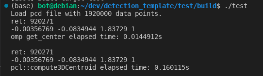
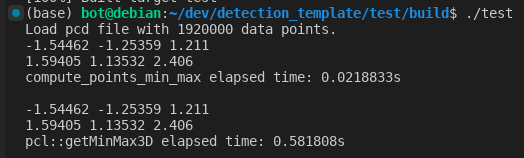

目录
1. 替换 compute3DCentroid 1 2 3 4 5 6 7 8 9 10 11 12 13 14 15 16 17 18 19 20 21 22 23 24 25 26 27 Eigen::Vector4f pcaCentroid; auto start = std ::chrono::steady_clock::now();auto ret = get_center(*cloud, pcaCentroid);std ::cout << "ret: " << ret << std ::endl ;std ::cout << pcaCentroid[0 ] << " " << pcaCentroid[1 ] << " " << pcaCentroid[2 ] << " " << pcaCentroid[3 ] << std ::endl ; auto end = std ::chrono::steady_clock::now();auto elapsed_seconds = std ::chrono::duration<double >(end - start);std ::cout << "get_center elapsed time: " << elapsed_seconds.count() << "s\n\n" ;start = std ::chrono::steady_clock::now(); ret = pcl::compute3DCentroid(*cloud, pcaCentroid); std ::cout << "ret: " << ret << std ::endl ;std ::cout << pcaCentroid[0 ] << " " << pcaCentroid[1 ] << " " << pcaCentroid[2 ] << " " << pcaCentroid[3 ] << std ::endl ; end = std ::chrono::steady_clock::now(); elapsed_seconds = std ::chrono::duration<double >(end - start); std ::cout << "pcl::compute3DCentroid elapsed time: " << elapsed_seconds.count() << "s\n\n" ;

可以发现我自己写的接口结果与pcl自带的接口结果是一致的，但是耗时明显更短。
pcl 里的源码 1 2 3 4 5 6 7 8 9 10 11 12 13 14 15 16 17 18 19 20 21 22 23 24 25 26 27 28 29 30 31 32 33 34 35 36 37 38 39 40 41 42 template <typename PointT, typename Scalar> inline unsigned int compute3DCentroid (const pcl::PointCloud<PointT> &cloud, Eigen::Matrix<Scalar, 4 , 1 > ¢roid) { if (cloud.empty ()) return (0 ); centroid.setZero (); if (cloud.is_dense) { for (const auto & point: cloud) { centroid[0 ] += point.x; centroid[1 ] += point.y; centroid[2 ] += point.z; } centroid /= static_cast <Scalar> (cloud.size ()); centroid[3 ] = 1 ; return (static_cast <unsigned int > (cloud.size ())); } unsigned cp = 0 ; for (const auto & point: cloud) { if (!isFinite (point)) continue ; centroid[0 ] += point.x; centroid[1 ] += point.y; centroid[2 ] += point.z; ++cp; } centroid /= static_cast <Scalar> (cp); centroid[3 ] = 1 ; return (cp); }
自定义接口 1 2 3 4 5 6 7 8 9 10 11 12 13 14 15 16 17 18 19 20 21 22 23 24 25 26 27 28 29 30 31 template <typename PointT, typename Scalar>unsigned int get_center (const pcl::PointCloud<PointT> &cloud, Eigen::Matrix<Scalar, 4 , 1 > ¢roid) centroid.setZero(); if (cloud.points.empty()) return 0 ; size_t sz = 0 ; float x = 0 ; float y = 0 ; float z = 0 ; for (size_t i = 0 ; i < cloud.points.size(); ++i) { const auto &pt = cloud.points[i]; if (std ::isnan(pt.x) || std ::isnan(pt.y) || std ::isnan(pt.z)) continue ; x += pt.x; y += pt.y; z += pt.z; ++sz; } if (sz != 0 ) { centroid[0 ] = x / sz; centroid[1 ] = y / sz; centroid[2 ] = z / sz; centroid[3 ] = 1 ; } return sz; }
关键点 两者代码其实非常相似，只有少数几处区别。多次对比后发现问题出在累加的地方：
1 2 3 4 5 6 7 8 9 centroid[0 ] += point.x; centroid[1 ] += point.y; centroid[2 ] += point.z; x += pt.x; y += pt.y; z += pt.z;
只要将这几行代码替换，就可以复现pcl现成接口的耗时。猜测是因为，每次累加的时候，都需要进行矩阵的读写，导致效率低下。
2. 替换 getMinMax3D 1 2 3 4 5 6 7 8 9 10 11 12 13 14 15 16 17 18 19 20 21 22 23 24 25 PointT min_pt, max_pt; start = std ::chrono::steady_clock::now(); pcl_utils::compute_points_min_max(*cloud, min_pt, max_pt); std ::cout << min_pt.x << " " << min_pt.y << " " << min_pt.z << std ::endl ;std ::cout << max_pt.x << " " << max_pt.y << " " << max_pt.z << std ::endl ;end = std ::chrono::steady_clock::now(); elapsed_seconds = std ::chrono::duration<double >(end - start); std ::cout << "compute_points_min_max elapsed time: " << elapsed_seconds.count() << "s\n\n" ;start = std ::chrono::steady_clock::now(); pcl::getMinMax3D(*cloud, min_pt, max_pt); std ::cout << min_pt.x << " " << min_pt.y << " " << min_pt.z << std ::endl ;std ::cout << max_pt.x << " " << max_pt.y << " " << max_pt.z << std ::endl ;end = std ::chrono::steady_clock::now(); elapsed_seconds = std ::chrono::duration<double >(end - start); std ::cout << "pcl::getMinMax3D elapsed time: " << elapsed_seconds.count() << "s\n\n" ;

结果与pcl自带的接口结果是一致的，但是耗时更短。
自定义接口代码 1 2 3 4 5 6 7 8 9 10 11 12 13 14 15 16 17 18 19 20 21 22 23 24 25 26 27 28 29 30 31 32 33 34 35 36 37 38 39 40 template <typename T, typename Container>inline bool compute_points_min_max (const Container& pts_in, T& min_pt_out, T& max_pt_out) if (pts_in.size() == 0 ) return false ; size_t first_ind = 0 ; while (!pcl::isFinite(pts_in[first_ind])) first_ind++; if (first_ind >= pts_in.size()) return false ; min_pt_out = max_pt_out = pts_in[first_ind]; for (size_t i = 0 ; i < pts_in.size(); ++i) { const auto & pt = pts_in[i]; if (!pcl::isFinite(pt)) continue ; if (pt.x > max_pt_out.x) max_pt_out.x = pt.x; else if (pt.x < min_pt_out.x) min_pt_out.x = pt.x; if (pt.y > max_pt_out.y) max_pt_out.y = pt.y; else if (pt.y < min_pt_out.y) min_pt_out.y = pt.y; if (pt.z > max_pt_out.z) max_pt_out.z = pt.z; else if (pt.z < min_pt_out.z) min_pt_out.z = pt.z; } return true ; } template <typename PointT>inline bool compute_points_min_max (const pcl::PointCloud<PointT>& cloud, PointT& min_pt_out, PointT& max_pt_out) return compute_points_min_max(cloud.points, min_pt_out, max_pt_out); }